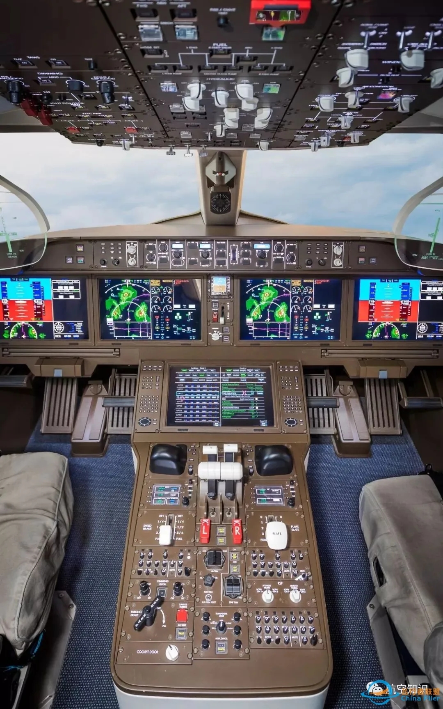

数字化阶段的管理驾驶舱
数据散落在各业务系统里，老板想看一个数、核一个口径，要等人去捞数、拉表、对齐解释。找数这件事，始终是人在做。
屏上几十上百个指标只是动因，动因叠加之后"会导致什么结果"，要靠人脑在报表之间自己串联，1.0 是"报表集合"，不是"决策场景的结构化表达"。
异常要靠人守着才发现：人工设阈值，误报漏报不断，数字又多停留在 T+1，等异动被看见，处置窗口往往已经关闭。
约 80% 工作量花在数据治理与口径统一上；建完之后，找数、分析、盯盘、写报告、跑处置还得靠人。驾驶舱建好了，人却没有省下来。
